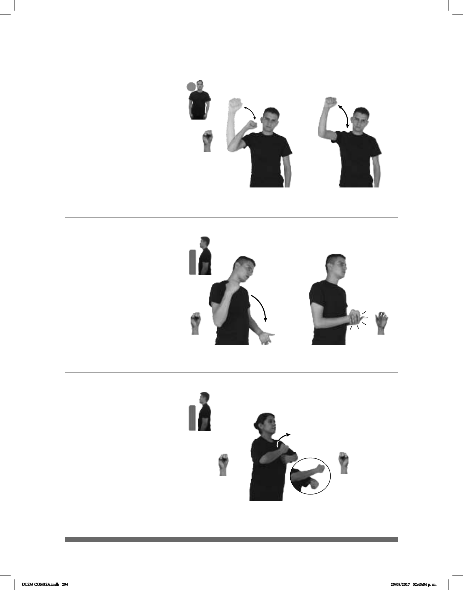

294
Seña: SM
S.1
Palma hacia afuera.
A la altura del rostro.
Recto hacia arriba
repetidamente.
interj. Expresión de
júbilo.
(S-1)
_¡ !
pro-NOSOTROS FUTBOL JUGAR GANAR VIVA
Ganamos el partido de futbol, ¡viva!
Seña: SS
S.1
Palmas hacia adentro.
A la altura del pecho
una mano sobre la otra.
Las manos se
mueven formando un arco hacia el
frente.
adj. Persona
elegida o designada para actuar en
representación de alguien.
(S-3)
ABANDERADO EQUIPO MEXICO YA IR LUGAR AUSTRIA
El abanderado del equipo mexicano se fue a Austria.
Seña: SB
MD S.1, MB 5.10
MD palma oblicua hacia
la izquierda y hacia adentro. MB palma
hacia arriba.
MD del hombro a MB. MB
a la altura del abdomen.
La MD golpea a la MB
en línea recta.
Ceño fruncido,
cabeza ladeada.
loc. adv. De manera
obligada.
(S-2)
A-FUERZA pro-TÚ DEBER tú-PAGAR-a-mí
Debes pagarme a fuerza.
DLSM COMISA.indb 294 25/09/2017 02:43:04 p. m.